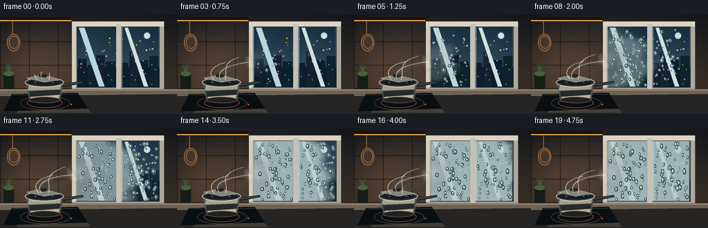
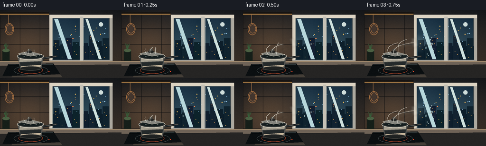

CODING AGENTS AS PIXEL WORLD MODELS
traex/GPT-5.6-Sol · phygen_112
点击播放 · 原生 RGB 像素
逐轮保存的候选
回放视频、检查图与代码变化。
每份候选均可单独播放。实际图片检查记录在下方工具轨迹中。
候选 01播放与检查图
点击播放 · 原生 RGB 像素


展开代码变化
--- 上一保存版本
+++ 本次保存版本
@@ -0,0 +1,272 @@
+from pathlib import Path
+import math
+import numpy as np
+from PIL import Image, ImageDraw, ImageFilter
+import artifact_io
+
+# Deterministic procedural timelapse, rendered at 3x then downsampled.
+W, H, N = 256, 144, 20
+S = 3
+RW, RH = W*S, H*S
+rng = np.random.default_rng(112)
+
+def sc(v):
+ if isinstance(v, (tuple, list)):
+ return tuple(int(round(x*S)) for x in v)
+ return int(round(v*S))
+
+def smoothstep(a, b, x):
+ if a == b: return float(x >= b)
+ q = np.clip((x-a)/(b-a), 0, 1)
+ return q*q*(3-2*q)
+
+def ellipse(draw, box, **kw): draw.ellipse(sc(box), **kw)
+def rect(draw, box, **kw): draw.rectangle(sc(box), **kw)
+def line(draw, pts, **kw): draw.line([sc(p) for p in pts], **kw)
+def poly(draw, pts, **kw): draw.polygon([sc(p) for p in pts], **kw)
+
+def cubic(p0,p1,p2,p3,n=80):
+ u=np.linspace(0,1,n)[:,None]
+ p0,p1,p2,p3=map(lambda p:np.array(p,float), (p0,p1,p2,p3))
+ return (1-u)**3*p0+3*(1-u)**2*u*p1+3*(1-u)*u*u*p2+u**3*p3
+
+def gradient_background():
+ yy,xx=np.mgrid[0:RH,0:RW]
+ # warm charcoal kitchen with a soft under-cabinet amber glow
+ top=np.array([33,35,38.],float); bot=np.array([72,59,48.],float)
+ f=(yy/(RH-1))[...,None]
+ arr=top*(1-f)+bot*f
+ glow=np.exp(-(((xx/S-55)/62)**2+((yy/S-70)/50)**2))*32
+ arr += glow[...,None]*np.array([1.0,.63,.3])
+ # subtle vignette and film texture
+ vig=np.clip(((xx-RW/2)/(RW*.73))**2+((yy-RH/2)/(RH*.78))**2,0,1)
+ arr-=vig[...,None]*16
+ noise=rng.normal(0,1.2,(RH,RW,1))
+ arr=np.clip(arr+noise,0,255).astype(np.uint8)
+ return Image.fromarray(arr,'RGB').convert('RGBA')
+
+# fixed droplet field; separate fields per pane for coherent growth
+pane_boxes=[(111,18,168,105),(175,18,229,105)]
+drops=[]
+for pane_i,(x0,y0,x1,y1) in enumerate(pane_boxes):
+ for j in range(78):
+ x=rng.uniform(x0+2,x1-2); y=rng.uniform(y0+3,y1-2)
+ # condensation reaches the lower-left pane first
+ dist=math.sqrt(((x-112)/126)**2+((y-70)/93)**2)
+ birth=np.clip(.08 + .47*dist + rng.uniform(-.13,.18), .05,.88)
+ rad=rng.uniform(.45,1.55)*(1.25 if rng.random()<.16 else 1)
+ elong=rng.uniform(1.0,1.65)
+ trail=(rng.random()<.13)
+ drops.append((x,y,birth,rad,elong,trail,rng.uniform(0,6.28)))
+
+# fixed moisture/noise maps at output resolution for organic fog front
+ny,nx=np.mgrid[0:H,0:W]
+noise_small=Image.fromarray(rng.integers(0,256,(36,64),dtype=np.uint8)).resize((W,H),Image.Resampling.BICUBIC).filter(ImageFilter.GaussianBlur(5))
+cloud=(np.asarray(noise_small,dtype=float)-128)/128
+fine=rng.normal(0,1,(H,W))
+
+# Outside details positions
+city_lights=[(rng.uniform(116,224),rng.uniform(31,83),rng.uniform(.45,1.1),rng.choice([(247,187,91),(151,203,236),(231,132,84)])) for _ in range(25)]
+
+def render_frame(fi):
+ p=fi/(N-1)
+ im=gradient_background(); d=ImageDraw.Draw(im,'RGBA')
+
+ # tiled backsplash, warm grout and reflected counter light
+ for x in [0,42,84]: line(d,[(x,7),(x,112)],fill=(14,15,16,100),width=sc(.65))
+ for y in [39,73,107]: line(d,[(0,y),(105,y)],fill=(14,15,16,115),width=sc(.7))
+ # warm under-cabinet strip
+ rect(d,(0,4,103,8),fill=(22,20,18,255)); rect(d,(0,8,103,9.3),fill=(239,172,89,80))
+ # hanging copper pan silhouette
+ line(d,[(18,9),(18,31)],fill=(165,116,72,180),width=sc(1.1))
+ ellipse(d,(10,28,29,53),fill=(67,54,46,255),outline=(180,120,67,150),width=sc(1))
+ ellipse(d,(13,31,27,49),outline=(224,147,77,80),width=sc(.7))
+ # a small herb jar / bottle in deep background
+ rect(d,(5,86,20,109),fill=(22,31,25,255)); ellipse(d,(5,82,20,89),fill=(75,95,66,255))
+ for k in range(7):
+ x=8+k*1.6; line(d,[(12,85),(x,75-rng.uniform(0,5))],fill=(54,95,58,185),width=sc(.6))
+
+ # window recess and sill
+ rect(d,(104,10,236,113),fill=(18,20,22,255))
+ rect(d,(107,13,233,109),fill=(205,198,183,255))
+ rect(d,(109,16,231,107),fill=(61,70,74,255))
+
+ # two cold glass panes with vertical gradients
+ for (x0,y0,x1,y1) in pane_boxes:
+ # cold nocturnal blue gradient
+ ph=int((y1-y0)*S); pw=int((x1-x0)*S)
+ yv=np.linspace(0,1,ph)[:,None,None]
+ c0=np.array([19,42,60.]); c1=np.array([52,80,91.])
+ a=np.broadcast_to(c0*(1-yv)+c1*yv,(ph,pw,3)).copy()
+ xv=np.linspace(0,1,pw)[None,:,None]
+ a += 8*np.exp(-((xv-.35)/.5)**2)
+ pane=Image.fromarray(np.clip(a,0,255).astype(np.uint8),'RGB').convert('RGBA')
+ im.alpha_composite(pane,(sc(x0),sc(y0)))
+
+ d=ImageDraw.Draw(im,'RGBA')
+ # distant skyline, doubled across panes, moon and wet-night lights
+ rect(d,(112,76,230,105),fill=(11,29,41,180))
+ buildings=[(113,64,125,105),(127,73,137,105),(139,59,151,105),(153,68,166,105),
+ (176,70,185,105),(187,54,199,105),(201,66,214,105),(216,60,229,105)]
+ for bi,b in enumerate(buildings):
+ col=(13+bi%3*3,31+bi%2*4,43+bi%3*3,220); rect(d,b,fill=col)
+ x0,y0,x1,y1=b
+ for yy0 in np.arange(y0+5,y1-2,7):
+ for xx0 in np.arange(x0+3,x1-2,5):
+ if ((int(xx0+yy0)+bi*7)%4)==0:
+ rect(d,(xx0,yy0,xx0+1,yy0+1),fill=(229,173,91,150))
+ ellipse(d,(208,26,217,35),fill=(208,222,219,180))
+ # city bokeh and glass reflection
+ for x,y,r,c in city_lights:
+ ellipse(d,(x-r,y-r,x+r,y+r),fill=(*c,130))
+ poly(d,[(114,19),(122,19),(151,104),(143,104)],fill=(183,215,219,18))
+ poly(d,[(180,19),(185,19),(214,104),(208,104)],fill=(207,225,221,13))
+
+ # Condensation layer: front spreads from steam contact point into both panes.
+ # Organic distance front plus increasing global veil.
+ dist=np.sqrt(((nx-111)/122)**2 + ((ny-68)/91)**2)
+ progress=.03 + 1.34*p
+ organic=dist - cloud*.14 - .035*np.sin(ny*.18+nx*.04)
+ front=np.clip((progress-organic)/.22,0,1)
+ front=front*front*(3-2*front)
+ pane_mask=np.zeros((H,W),float)
+ for x0,y0,x1,y1 in pane_boxes: pane_mask[y0:y1,x0:x1]=1
+ # leave first frame mostly crystalline clear; fog grows milky blue-white
+ density=np.clip(front*(.11+.61*smoothstep(.05,.82,p)) + pane_mask*(.17*smoothstep(.38,1,p)),0,.82)*pane_mask
+ density=np.clip(density + fine*.012*density,0,.82)
+ rgba=np.empty((H,W,4),dtype=np.uint8)
+ rgba[...,0]=188; rgba[...,1]=207; rgba[...,2]=207; rgba[...,3]=(density*255).astype(np.uint8)
+ fog=Image.fromarray(rgba,'RGBA').resize((RW,RH),Image.Resampling.BICUBIC).filter(ImageFilter.GaussianBlur(sc(.45)))
+ im=Image.alpha_composite(im,fog)
+ d=ImageDraw.Draw(im,'RGBA')
+
+ # A pale impact bloom where hot vapor first meets the cold pane.
+ if p>.05:
+ a=int(92*smoothstep(.05,.42,p)*(1-.25*smoothstep(.7,1,p)))
+ bloom=Image.new('RGBA',(RW,RH),(0,0,0,0)); bd=ImageDraw.Draw(bloom,'RGBA')
+ rr=5+17*smoothstep(.05,.68,p)
+ ellipse(bd,(106-rr*.45,65-rr*.8,110+rr,65+rr*.8),fill=(225,232,226,a))
+ bloom=bloom.filter(ImageFilter.GaussianBlur(sc(5+rr*.18)))
+ im=Image.alpha_composite(im,bloom); d=ImageDraw.Draw(im,'RGBA')
+
+ # Water beads, with gravity-driven elongation and late coalescing trails.
+ for x,y,birth,rad,elong,trail,phase in drops:
+ age=(p-birth)/max(.001,1-birth)
+ if age<=0: continue
+ q=smoothstep(0,.22,age)
+ # a few droplets slide down after growing
+ slide=0
+ if trail and age>.52:
+ slide=(age-.52)**1.6*20
+ tl=min(14,2+slide*.8)
+ line(d,[(x,y-rad),(x+.25*math.sin(phase),y+slide+tl)],fill=(191,217,217,int(45*q)),width=sc(max(.35,rad*.34)))
+ yy0=y+slide
+ rr=rad*(.55+1.08*q)
+ ry=rr*elong*(1+.35*max(0,age-.55))
+ # dark refracted rim, cool watery interior, tiny specular crescent
+ ellipse(d,(x-rr-.25,yy0-ry-.25,x+rr+.25,yy0+ry+.25),fill=(28,56,66,int(75*q)),outline=(220,235,231,int(130*q)),width=sc(.38))
+ ellipse(d,(x-rr*.54,yy0-ry*.55,x+rr*.55,yy0+ry*.64),fill=(171,202,204,int(45*q)))
+ ellipse(d,(x-rr*.48,yy0-ry*.60,x-rr*.08,yy0-ry*.20),fill=(250,252,242,int(205*q)))
+ if rr>1.4: ellipse(d,(x+rr*.18,yy0+ry*.28,x+rr*.48,yy0+ry*.56),fill=(30,63,72,int(95*q)))
+
+ # Window frame and mullion remain crisp, reinforcing droplets are on glass.
+ rect(d,(104,10,109.5,113),fill=(214,205,189,255))
+ rect(d,(231,10,237,113),fill=(173,169,159,255))
+ rect(d,(104,10,237,17),fill=(220,211,194,255))
+ rect(d,(104,106,237,113),fill=(169,164,154,255))
+ rect(d,(168,14,175,109),fill=(197,193,182,255))
+ line(d,[(110,17),(110,105)],fill=(245,237,215,120),width=sc(.6))
+ line(d,[(176,18),(176,105)],fill=(245,239,220,70),width=sc(.5))
+ # thick sill
+ poly(d,[(101,109),(240,109),(246,116),(99,116)],fill=(188,181,169,255))
+ line(d,[(101,109),(240,109)],fill=(243,230,204,170),width=sc(1))
+
+ # Counter and induction hob
+ poly(d,[(0,108),(256,108),(256,144),(0,144)],fill=(38,37,36,255))
+ poly(d,[(0,108),(256,108),(256,115),(0,118)],fill=(111,99,87,255))
+ line(d,[(0,109),(256,109)],fill=(219,183,136,95),width=sc(.8))
+ # countertop reflection
+ poly(d,[(39,119),(112,117),(131,142),(24,142)],fill=(69,63,56,100))
+ poly(d,[(35,119),(105,118),(116,130),(27,132)],fill=(184,137,85,18))
+ # black glass hob
+ poly(d,[(17,115),(112,113),(127,136),(5,140)],fill=(11,15,17,255))
+ line(d,[(18,116),(111,115)],fill=(113,127,128,100),width=sc(.7))
+ ellipse(d,(29,118,101,138),outline=(82,91,91,105),width=sc(.75))
+ ellipse(d,(39,120,90,135),outline=(212,84,47,40),width=sc(.55))
+
+ # Stainless saucepan, solid and detailed
+ # handle behind pan
+ poly(d,[(84,101),(119,96),(121,99),(86,106)],fill=(34,37,38,255))
+ line(d,[(88,102),(118,98)],fill=(192,187,173,100),width=sc(.7))
+ # body
+ ellipse(d,(37,93,91,107),fill=(51,55,56,255),outline=(220,216,201,230),width=sc(1))
+ poly(d,[(37,99),(91,99),(87,124),(43,126)],fill=(82,83,80,255))
+ # metallic bands
+ poly(d,[(42,102),(88,102),(87,108),(40,110)],fill=(166,160,145,120))
+ poly(d,[(42,111),(87,109),(86,116),(43,119)],fill=(37,42,43,170))
+ poly(d,[(44,119),(86,116),(84,123),(47,125)],fill=(193,177,151,70))
+ line(d,[(43,125),(86,122)],fill=(225,207,176,150),width=sc(.8))
+ ellipse(d,(42,119,87,128),fill=(31,34,34,190),outline=(115,110,101,160),width=sc(.6))
+ # rim, dark simmering water, lid resting askew
+ ellipse(d,(36,91,92,105),fill=(47,51,51,255),outline=(230,224,207,230),width=sc(1.15))
+ ellipse(d,(40,94,88,102),fill=(21,30,31,255))
+ # water highlights/bubbles
+ for bx,by,br in [(51,98,1.2),(64,96.5,.8),(76,98,1),(83,96,.55)]:
+ ellipse(d,(bx-br,by-br*.45,bx+br,by+br*.45),outline=(201,212,203,130),width=sc(.4))
+ # lid edge and knob on back-left
+ poly(d,[(38,92),(61,87),(88,94),(64,98)],fill=(135,135,128,170),outline=(228,220,201,180))
+ ellipse(d,(56,86,68,91),fill=(29,30,29,255)); rect(d,(59,83.8,65,88),fill=(34,34,32,255)); ellipse(d,(58,82.5,66,86),fill=(73,70,63,255))
+
+ # Animated steam plume in room. Curves lengthen to contact and then pulse.
+ steam=Image.new('RGBA',(RW,RH),(0,0,0,0)); sd=ImageDraw.Draw(steam,'RGBA')
+ reach=smoothstep(0,.19,p)
+ pulse=.86+.14*math.sin(fi*1.35)
+ paths=[
+ ((61,93),(52+3*math.sin(fi*.35),78),(77,69+2*math.sin(fi*.5)),(109,67)),
+ ((69,94),(75,80),(57+4*math.sin(fi*.31),68),(96,57+2*math.sin(fi*.4))),
+ ((55,94),(44,83),(54,72),(76,68)),
+ ((77,95),(84,84),(93,81),(109,78)),
+ ((63,92),(69,81),(88,78),(106,71)),
+ ]
+ for k,pp in enumerate(paths):
+ pts=cubic(*pp,n=90)
+ # earliest frames show shorter rising vapor; by frame 4 it reaches glass
+ frac=min(1, .30 + reach*.70 + .06*math.sin(fi*.22+k))
+ pts=pts[:max(2,int(len(pts)*frac))]
+ pts[:,0]+=math.sin(fi*.47+k*1.7)*(1.3+k*.13)
+ pts[:,1]+=math.sin(fi*.29+k)*.8
+ coords=[sc(tuple(z)) for z in pts]
+ alpha=int((34 if k else 48)*pulse)
+ sd.line(coords,fill=(237,238,225,alpha),width=sc(4.8 if k==0 else 2.7),joint='curve')
+ # puffs at the contact edge
+ if reach>.3:
+ for k in range(5):
+ cx=100+k*2.0+math.sin(fi*.45+k)*1.5; cy=67+(k-2)*3+math.cos(fi*.37+k)*2
+ r=3.5+k*.45
+ ellipse(sd,(cx-r,cy-r,cx+r,cy+r),fill=(239,242,232,int(20+24*reach)))
+ steam=steam.filter(ImageFilter.GaussianBlur(sc(2.1)))
+ im=Image.alpha_composite(im,steam)
+ # Fine bright cores keep steam legible against the wall
+ sd2=ImageDraw.Draw(im,'RGBA')
+ for k,pp in enumerate(paths[:3]):
+ pts=cubic(*pp,n=60); frac=min(1,.27+reach*.72)
+ pts=pts[:max(2,int(len(pts)*frac))]
+ pts[:,0]+=math.sin(fi*.47+k*1.7)*(1.3+k*.13)
+ pts[:,1]+=math.sin(fi*.29+k)*.8
+ sd2.line([sc(tuple(z)) for z in pts],fill=(248,246,233,int(22+13*reach)),width=sc(.65))
+
+ # Foreground utensil glint and warm stove indicator
+ d=ImageDraw.Draw(im,'RGBA')
+ ellipse(d,(102,129,104,131),fill=(245,78,46,180))
+ # restrained film grain at final scale is added after downsample
+ out=im.convert('RGB').resize((W,H),Image.Resampling.LANCZOS)
+ arr=np.asarray(out).astype(np.int16)
+ # coherent, very subtle sensor grain
+ gr=np.random.default_rng(900+fi).normal(0,.45,arr.shape[:2])[:,:,None]
+ arr=np.clip(arr+gr,0,255).astype(np.uint8)
+ return arr
+
+frames=np.stack([render_frame(i) for i in range(N)],axis=0)
+assert frames.shape==(20,144,256,3) and frames.dtype==np.uint8
+artifact_io.save(frames,Path(__file__).resolve().parent)
+print('saved',frames.shape,frames.dtype)
可观测工具轨迹
实际执行的命令与返回图片。
命令 1exit 0
/bin/bash -lc "cat prompt.txt && printf '\\n--- GENERATION_RULES.md ---\\n' && cat GENERATION_RULES.md && printf '\\n--- task_spec.json ---\\n' && cat task_spec.json"
命令 2exit 0
/bin/bash -lc "find . -maxdepth 2 -type f -printf '%p\\n' | sort && printf '\\n--- binaries ---\\n' && command -v ffmpeg || true && command -v blender || true && command -v python3 || true"
命令 3exit 0
/bin/bash -lc 'cat artifact_io.py'
命令 4exit 0
/bin/bash -lc "cat > generate.py <<'PY'
from pathlib import Path
import math
import numpy as np
from PIL import Image, ImageDraw, ImageFilter
import artifact_io
# Deterministic procedural timelapse, rendered at 3x then downsampled.
W, H, N = 256, 144, 20
S = 3
RW, RH = W*S, H*S
rng = np.random.default_rng(112)
def sc(v):
if isinstance(v, (tuple, list)):
return tuple(int(round(x*S)) for x in v)
return int(round(v*S))
def smoothstep(a, b, x):
if a == b: return float(x >= b)
q = np.clip((x-a)/(b-a), 0, 1)
return q*q*(3-2*q)
def ellipse(draw, box, **kw): draw.ellipse(sc(box), **kw)
def rect(draw, box, **kw): draw.rectangle(sc(box), **kw)
def line(draw, pts, **kw): draw.line([sc(p) for p in pts], **kw)
def poly(draw, pts, **kw): draw.polygon([sc(p) for p in pts], **kw)
def cubic(p0,p1,p2,p3,n=80):
u=np.linspace(0,1,n)[:,None]
p0,p1,p2,p3=map(lambda p:np.array(p,float), (p0,p1,p2,p3))
return (1-u)**3*p0+3*(1-u)**2*u*p1+3*(1-u)*u*u*p2+u**3*p3
def gradient_background():
yy,xx=np.mgrid[0:RH,0:RW]
# warm charcoal kitchen with a soft under-cabinet amber glow
top=np.array([33,35,38.],float); bot=np.array([72,59,48.],float)
f=(yy/(RH-1))[...,None]
arr=top*(1-f)+bot*f
glow=np.exp(-(((xx/S-55)/62)**2+((yy/S-70)/50)**2))*32
arr += glow[...,None]*np.array([1.0,.63,.3])
# subtle vignette and film texture
vig=np.clip(((xx-RW/2)/(RW*.73))**2+((yy-RH/2)/(RH*.78))**2,0,1)
arr-=vig[...,None]*16
noise=rng.normal(0,1.2,(RH,RW,1))
arr=np.clip(arr+noise,0,255).astype(np.uint8)
return Image.fromarray(arr,'RGB').convert('RGBA')
# fixed droplet field; separate fields per pane for coherent growth
pane_boxes=[(111,18,168,105),(175,18,229,105)]
drops=[]
for pane_i,(x0,y0,x1,y1) in enumerate(pane_boxes):
for j in range(78):
x=rng.uniform(x0+2,x1-2); y=rng.uniform(y0+3,y1-2)
# condensation reaches the lower-left pane first
dist=math.sqrt(((x-112)/126)**2+((y-70)/93)**2)
birth=np.clip(.08 + .47*dist + rng.uniform(-.13,.18), .05,.88)
rad=rng.uniform(.45,1.55)*(1.25 if rng.random()<.16 else 1)
elong=rng.uniform(1.0,1.65)
trail=(rng.random()<.13)
drops.append((x,y,birth,rad,elong,trail,rng.uniform(0,6.28)))
# fixed moisture/noise maps at output resolution for organic fog front
ny,nx=np.mgrid[0:H,0:W]
noise_small=Image.fromarray(rng.integers(0,256,(36,64),dtype=np.uint8)).resize((W,H),Image.Resampling.BICUBIC).filter(ImageFilter.GaussianBlur(5))
cloud=(np.asarray(noise_small,dtype=float)-128)/128
fine=rng.normal(0,1,(H,W))
# Outside details positions
city_lights=[(rng.uniform(116,224),rng.uniform(31,83),rng.uniform(.45,1.1),rng.choice([(247,187,91),(151,203,236),(231,132,84)])) for _ in range(25)]
def render_frame(fi):
p=fi/(N-1)
im=gradient_background(); d=ImageDraw.Draw(im,'RGBA')
# tiled backsplash, warm grout and reflected counter light
for x in [0,42,84]: line(d,[(x,7),(x,112)],fill=(14,15,16,100),width=sc(.65))
for y in [39,73,107]: line(d,[(0,y),(105,y)],fill=(14,15,16,115),width=sc(.7))
# warm under-cabinet strip
rect(d,(0,4,103,8),fill=(22,20,18,255)); rect(d,(0,8,103,9.3),fill=(239,172,89,80))
# hanging copper pan silhouette
line(d,[(18,9),(18,31)],fill=(165,116,72,180),width=sc(1.1))
ellipse(d,(10,28,29,53),fill=(67,54,46,255),outline=(180,120,67,150),width=sc(1))
ellipse(d,(13,31,27,49),outline=(224,147,77,80),width=sc(.7))
# a small herb jar / bottle in deep background
rect(d,(5,86,20,109),fill=(22,31,25,255)); ellipse(d,(5,82,20,89),fill=(75,95,66,255))
for k in range(7):
x=8+k*1.6; line(d,[(12,85),(x,75-rng.uniform(0,5))],fill=(54,95,58,185),width=sc(.6))
# window recess and sill
rect(d,(104,10,236,113),fill=(18,20,22,255))
rect(d,(107,13,233,109),fill=(205,198,183,255))
rect(d,(109,16,231,107),fill=(61,70,74,255))
# two cold glass panes with vertical gradients
for (x0,y0,x1,y1) in pane_boxes:
# cold nocturnal blue gradient
ph=int((y1-y0)*S); pw=int((x1-x0)*S)
yv=np.linspace(0,1,ph)[:,None,None]
c0=np.array([19,42,60.]); c1=np.array([52,80,91.])
a=np.broadcast_to(c0*(1-yv)+c1*yv,(ph,pw,3)).copy()
xv=np.linspace(0,1,pw)[None,:,None]
a += 8*np.exp(-((xv-.35)/.5)**2)
pane=Image.fromarray(np.clip(a,0,255).astype(np.uint8),'RGB').convert('RGBA')
im.alpha_composite(pane,(sc(x0),sc(y0)))
d=ImageDraw.Draw(im,'RGBA')
# distant skyline, doubled across panes, moon and wet-night lights
rect(d,(112,76,230,105),fill=(11,29,41,180))
buildings=[(113,64,125,105),(127,73,137,105),(139,59,151,105),(153,68,166,105),
(176,70,185,105),(187,54,199,105),(201,66,214,105),(216,60,229,105)]
for bi,b in enumerate(buildings):
col=(13+bi%3*3,31+bi%2*4,43+bi%3*3,220); rect(d,b,fill=col)
x0,y0,x1,y1=b
for yy0 in np.arange(y0+5,y1-2,7):
for xx0 in np.arange(x0+3,x1-2,5):
if ((int(xx0+yy0)+bi*7)%4)==0:
rect(d,(xx0,yy0,xx0+1,yy0+1),fill=(229,173,91,150))
ellipse(d,(208,26,217,35),fill=(208,222,219,180))
# city bokeh and glass reflection
for x,y,r,c in city_lights:
ellipse(d,(x-r,y-r,x+r,y+r),fill=(*c,130))
poly(d,[(114,19),(122,19),(151,104),(143,104)],fill=(183,215,219,18))
poly(d,[(180,19),(185,19),(214,104),(208,104)],fill=(207,225,221,13))
# Condensation layer: front spreads from steam contact point into both panes.
# Organic distance front plus increasing global veil.
dist=np.sqrt(((nx-111)/122)**2 + ((ny-68)/91)**2)
progress=.03 + 1.34*p
organic=dist - cloud*.14 - .035*np.sin(ny*.18+nx*.04)
front=np.clip((progress-organic)/.22,0,1)
front=front*front*(3-2*front)
pane_mask=np.zeros((H,W),float)
for x0,y0,x1,y1 in pane_boxes: pane_mask[y0:y1,x0:x1]=1
# leave first frame mostly crystalline clear; fog grows milky blue-white
density=np.clip(front*(.11+.61*smoothstep(.05,.82,p)) + pane_mask*(.17*smoothstep(.38,1,p)),0,.82)*pane_mask
density=np.clip(density + fine*.012*density,0,.82)
rgba=np.empty((H,W,4),dtype=np.uint8)
rgba[...,0]=188; rgba[...,1]=207; rgba[...,2]=207; rgba[...,3]=(density*255).astype(np.uint8)
fog=Image.fromarray(rgba,'RGBA').resize((RW,RH),Image.Resampling.BICUBIC).filter(ImageFilter.GaussianBlur(sc(.45)))
im=Image.alpha_composite(im,fog)
d=ImageDraw.Draw(im,'RGBA')
# A pale impact bloom where hot vapor first meets the cold pane.
if p>.05:
a=int(92*smoothstep(.05,.42,p)*(1-.25*smoothstep(.7,1,p)))
bloom=Image.new('RGBA',(RW,RH),(0,0,0,0)); bd=ImageDraw.Draw(bloom,'RGBA')
rr=5+17*smoothstep(.05,.68,p)
ellipse(bd,(106-rr*.45,65-rr*.8,110+rr,65+rr*.8),fill=(225,232,226,a))
bloom=bloom.filter(ImageFilter.GaussianBlur(sc(5+rr*.18)))
im=Image.alpha_composite(im,bloom); d=ImageDraw.Draw(im,'RGBA')
# Water beads, with gravity-driven elongation and late coalescing trails.
for x,y,birth,rad,elong,trail,phase in drops:
age=(p-birth)/max(.001,1-birth)
if age<=0: continue
q=smoothstep(0,.22,age)
# a few droplets slide down after growing
slide=0
if trail and age>.52:
slide=(age-.52)**1.6*20
tl=min(14,2+slide*.8)
line(d,[(x,y-rad),(x+.25*math.sin(phase),y+slide+tl)],fill=(191,217,217,int(45*q)),width=sc(max(.35,rad*.34)))
yy0=y+slide
rr=rad*(.55+1.08*q)
ry=rr*elong*(1+.35*max(0,age-.55))
# dark refracted rim, cool watery interior, tiny specular crescent
ellipse(d,(x-rr-.25,yy0-ry-.25,x+rr+.25,yy0+ry+.25),fill=(28,56,66,int(75*q)),outline=(220,235,231,int(130*q)),width=sc(.38))
ellipse(d,(x-rr*.54,yy0-ry*.55,x+rr*.55,yy0+ry*.64),fill=(171,202,204,int(45*q)))
ellipse(d,(x-rr*.48,yy0-ry*.60,x-rr*.08,yy0-ry*.20),fill=(250,252,242,int(205*q)))
if rr>1.4: ellipse(d,(x+rr*.18,yy0+ry*.28,x+rr*.48,yy0+ry*.56),fill=(30,63,72,int(95*q)))
# Window frame and mullion remain crisp, reinforcing droplets are on glass.
rect(d,(104,10,109.5,113),fill=(214,205,189,255))
rect(d,(231,10,237,113),fill=(173,169,159,255))
rect(d,(104,10,237,17),fill=(220,211,194,255))
rect(d,(104,106,237,113),fill=(169,164,154,255))
rect(d,(168,14,175,109),fill=(197,193,182,255))
line(d,[(110,17),(110,105)],fill=(245,237,215,120),width=sc(.6))
line(d,[(176,18),(176,105)],fill=(245,239,220,70),width=sc(.5))
# thick sill
poly(d,[(101,109),(240,109),(246,116),(99,116)],fill=(188,181,169,255))
line(d,[(101,109),(240,109)],fill=(243,230,204,170),width=sc(1))
# Counter and induction hob
poly(d,[(0,108),(256,108),(256,144),(0,144)],fill=(38,37,36,255))
poly(d,[(0,108),(256,108),(256,115),(0,118)],fill=(111,99,87,255))
line(d,[(0,109),(256,109)],fill=(219,183,136,95),width=sc(.8))
# countertop reflection
poly(d,[(39,119),(112,117),(131,142),(24,142)],fill=(69,63,56,100))
poly(d,[(35,119),(105,118),(116,130),(27,132)],fill=(184,137,85,18))
# black glass hob
poly(d,[(17,115),(112,113),(127,136),(5,140)],fill=(11,15,17,255))
line(d,[(18,116),(111,115)],fill=(113,127,128,100),width=sc(.7))
ellipse(d,(29,118,101,138),outline=(82,91,91,105),width=sc(.75))
ellipse(d,(39,120,90,135),outline=(212,84,47,40),width=sc(.55))
# Stainless saucepan, solid and detailed
# handle behind pan
poly(d,[(84,101),(119,96),(121,99),(86,106)],fill=(34,37,38,255))
line(d,[(88,102),(118,98)],fill=(192,187,173,100),width=sc(.7))
# body
ellipse(d,(37,93,91,107),fill=(51,55,56,255),outline=(220,216,201,230),width=sc(1))
poly(d,[(37,99),(91,99),(87,124),(43,126)],fill=(82,83,80,255))
# metallic bands
poly(d,[(42,102),(88,102),(87,108),(40,110)],fill=(166,160,145,120))
poly(d,[(42,111),(87,109),(86,116),(43,119)],fill=(37,42,43,170))
poly(d,[(44,119),(86,116),(84,123),(47,125)],fill=(193,177,151,70))
line(d,[(43,125),(86,122)],fill=(225,207,176,150),width=sc(.8))
ellipse(d,(42,119,87,128),fill=(31,34,34,190),outline=(115,110,101,160),width=sc(.6))
# rim, dark simmering water, lid resting askew
ellipse(d,(36,91,92,105),fill=(47,51,51,255),outline=(230,224,207,230),width=sc(1.15))
ellipse(d,(40,94,88,102),fill=(21,30,31,255))
# water highlights/bubbles
for bx,by,br in [(51,98,1.2),(64,96.5,.8),(76,98,1),(83,96,.55)]:
ellipse(d,(bx-br,by-br*.45,bx+br,by+br*.45),outline=(201,212,203,130),width=sc(.4))
# lid edge and knob on back-left
poly(d,[(38,92),(61,87),(88,94),(64,98)],fill=(135,135,128,170),outline=(228,220,201,180))
ellipse(d,(56,86,68,91),fill=(29,30,29,255)); rect(d,(59,83.8,65,88),fill=(34,34,32,255)); ellipse(d,(58,82.5,66,86),fill=(73,70,63,255))
# Animated steam plume in room. Curves lengthen to contact and then pulse.
steam=Image.new('RGBA',(RW,RH),(0,0,0,0)); sd=ImageDraw.Draw(steam,'RGBA')
reach=smoothstep(0,.19,p)
pulse=.86+.14*math.sin(fi*1.35)
paths=[
((61,93),(52+3*math.sin(fi*.35),78),(77,69+2*math.sin(fi*.5)),(109,67)),
((69,94),(75,80),(57+4*math.sin(fi*.31),68),(96,57+2*math.sin(fi*.4))),
((55,94),(44,83),(54,72),(76,68)),
((77,95),(84,84),(93,81),(109,78)),
((63,92),(69,81),(88,78),(106,71)),
]
for k,pp in enumerate(paths):
pts=cubic(*pp,n=90)
# earliest frames show shorter rising vapor; by frame 4 it reaches glass
frac=min(1, .30 + reach*.70 + .06*math.sin(fi*.22+k))
pts=pts[:max(2,int(len(pts)*frac))]
pts[:,0]+=math.sin(fi*.47+k*1.7)*(1.3+k*.13)
pts[:,1]+=math.sin(fi*.29+k)*.8
coords=[sc(tuple(z)) for z in pts]
alpha=int((34 if k else 48)*pulse)
sd.line(coords,fill=(237,238,225,alpha),width=sc(4.8 if k==0 else 2.7),joint='curve')
# puffs at the contact edge
if reach>.3:
for k in range(5):
cx=100+k*2.0+math.sin(fi*.45+k)*1.5; cy=67+(k-2)*3+math.cos(fi*.37+k)*2
r=3.5+k*.45
ellipse(sd,(cx-r,cy-r,cx+r,cy+r),fill=(239,242,232,int(20+24*reach)))
steam=steam.filter(ImageFilter.GaussianBlur(sc(2.1)))
im=Image.alpha_composite(im,steam)
# Fine bright cores keep steam legible against the wall
sd2=ImageDraw.Draw(im,'RGBA')
for k,pp in enumerate(paths[:3]):
pts=cubic(*pp,n=60); frac=min(1,.27+reach*.72)
pts=pts[:max(2,int(len(pts)*frac))]
pts[:,0]+=math.sin(fi*.47+k*1.7)*(1.3+k*.13)
pts[:,1]+=math.sin(fi*.29+k)*.8
sd2.line([sc(tuple(z)) for z in pts],fill=(248,246,233,int(22+13*reach)),width=sc(.65))
# Foreground utensil glint and warm stove indicator
d=ImageDraw.Draw(im,'RGBA')
ellipse(d,(102,129,104,131),fill=(245,78,46,180))
# restrained film grain at final scale is added after downsample
out=im.convert('RGB').resize((W,H),Image.Resampling.LANCZOS)
arr=np.asarray(out).astype(np.int16)
# coherent, very subtle sensor grain
gr=np.random.default_rng(900+fi).normal(0,.45,arr.shape[:2])[:,:,None]
arr=np.clip(arr+gr,0,255).astype(np.uint8)
return arr
frames=np.stack([render_frame(i) for i in range(N)],axis=0)
assert frames.shape==(20,144,256,3) and frames.dtype==np.uint8
artifact_io.save(frames,Path(__file__).resolve().parent)
print('saved',frames.shape,frames.dtype)
PY
python3 generate.py"命令 5exit 0
/bin/bash -lc "python3 - <<'PY'
import numpy as np
from PIL import Image
from pathlib import Path
f=np.stack([np.array(Image.open(f'frames/{i:02d}.png')) for i in range(20)])
print('shape/dtype/range',f.shape,f.dtype,f.min(),f.max())
for roi,name in [((18,106,105,231),'window'),((108,0,144,256),'counter'),((20,0,105,103),'wall')]:
y0,x0,y1,x1=roi
r=f[:,y0:y1,x0:x1]
print(name,'mean RGB first/mid/last',*[np.round(r[i].mean((0,1)),1) for i in (0,5,10,15,19)])
d=np.abs(f[1:].astype(int)-f[:-1].astype(int))
print('frame delta means',np.round(d.mean((1,2,3)),2))
print('identical adjacent?',[(i,int(np.array_equal(f[i],f[i+1]))) for i in range(19)])
print('outputs',[(p.name,p.stat().st_size) for p in sorted(Path('.').glob('*')) if p.is_file()])
PY"命令 6exit 0
/bin/bash -lc "python3 -m py_compile generate.py artifact_io.py && python3 - <<'PY'
import numpy as np
z=np.load('pixels.npz')['pixels']
print(z.shape,z.dtype,hex(int(z.min())),hex(int(z.max())))
assert z.shape==(144,256,20)
PY"保存候选 1 份；完成命令 6 次；可验证图片返回 0 张。原始 API 响应与完整日志保留在本地。